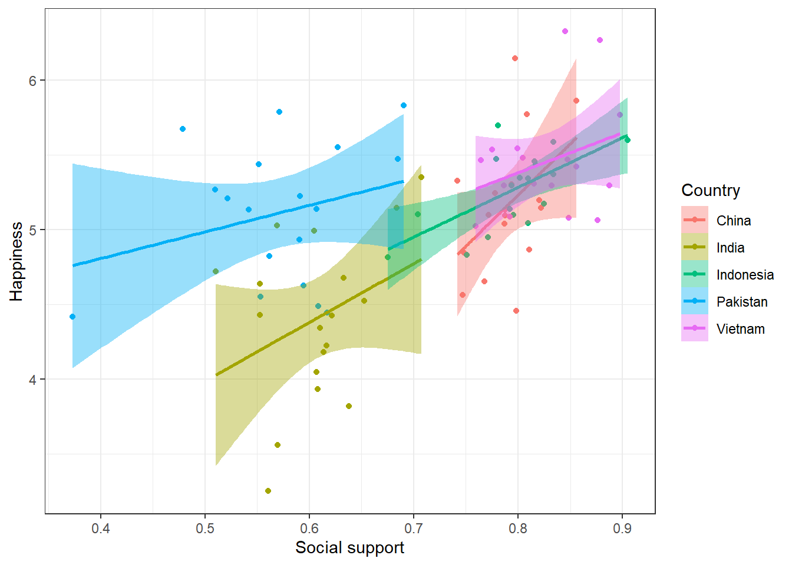
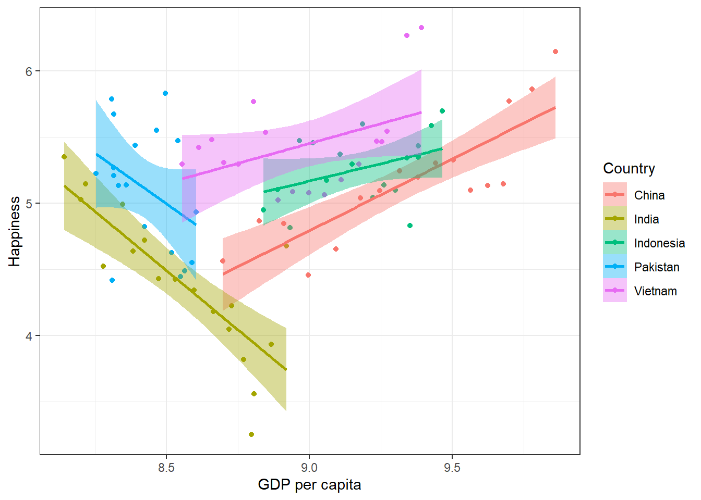

# packages
library(tidyverse) # Graphs with ggplot()
library(knitr) # Tables with kable()
library(brms) # Hierarchical Bayesian models
library(rstan) # Interface to Stan
library(bayesplot) # Model output graphs
set.seed(359)Assignment6
A subset of the dataset form the 2024 World Happiness Report, which includes the countries for which 15 data points or more were available. The report presents the results of a yearly survey of people’s happiness in different parts of the world. The initiative is a collaboration of Gallup, the Oxford Well-being Research Center, the UN Sustainable Development Solutions Network, and the WHR’s Editorial Board.
In general, the initiative seeks to highlight happiness as a central indicator of societal progress; that it can be measured; and that its measurement can form an empirical basis for interventions to promote happiness.
In each survey round, around 1000 people from each country are asked several questions related to happiness. In one question they are asked to imagine a ladder with steps from 0 to 10, and to rate their overall life happiness on it, with higher steps representing higher happiness (“Cantril ladder”, corresponding to the variable Life.Ladder in the dataset). Further questions refer to positive and negative emotions experienced the past day; and to possible causes of happiness like GDP, social support, freedom to make life choices, and perceived corruption. Below you see the first rows of the dataset.
d <- read.csv("countries_n15over.csv")Exercise 1
Choose 5 countries from a given continent, and create a new, smaller dataset with only the data from those countries (you can use the subset() function for this).
asia <- d %>%
subset(Country.name == "China" | Country.name == "India" |
Country.name == "Pakistan" | Country.name == "Indonesia" |
Country.name == "Vietnam")
europe <- d %>%
subset(Country.name == "Portugal" | Country.name == "Italy" |
Country.name == "Greece" | Country.name == "France" |
Country.name == "Latvia")Exercise 2
Formulate a hypothesis to test with your dataset. The hypothesis should be testable using Life.Ladder as criterion and one or more of the other variables as predictors.
Hypothesis: (a) social support and (b) GDP per capita positively predict Life.Ladder.
Exercise 3
Illustrate the pattern in the data that is relevant to the hypothesis with a graph. Design the graph in such a way, that (a) two (or more) levels of aggregation are visible, and (b) not only information about means, but also information about the variance around those means is visible, (c) the figure axes have comprehensible labels.
# social support
ggplot(asia, aes(x = Social.support, y = Life.Ladder,
color = factor(Country.name),
fill = factor(Country.name)))+
geom_point()+
geom_smooth(method = "lm") +
theme_bw()+
labs(x = "Social support", y = "Happiness",
color = "Country", fill = "Country")
# GDP
ggplot(asia, aes(x = Log.GDP.per.capita, y = Life.Ladder,
color = factor(Country.name),
fill = factor(Country.name)))+
geom_point()+
geom_smooth(method = "lm") +
theme_bw()+
labs(x = "GDP per capita", y = "Happiness",
color = "Country", fill = "Country")
It seems that there is no strong reason to include random effects for the slope of social support. However, there is very strong evidence for GDP.
Exercise 4
Specify and test a multilevel model to test your hypothesis. Let your model contain at least two levels of aggregation, and include parameters to assess not only means (“fixed effects”) but also variability around those means (“random effects”). Test it both by computing posterior parameter values, and by comparing alternative models (with vs. without a parameter of interest) using Bayes factors.
Asia data
# null model
file_path <- "brms_model0.rds"
if (file.exists(file_path)) {
model0 <- readRDS(file_path)
} else {
model0 <- brm(Life.Ladder ~ (1 | Country.name),
data = asia,
iter = 2000, warmup = 500, cores = 4,
save_pars = save_pars(all = TRUE))
saveRDS(model0, file = file_path)
}
model0 Family: gaussian
Links: mu = identity
Formula: Life.Ladder ~ (1 | Country.name)
Data: asia (Number of observations: 89)
Draws: 4 chains, each with iter = 2000; warmup = 500; thin = 1;
total post-warmup draws = 6000
Multilevel Hyperparameters:
~Country.name (Number of levels: 5)
Estimate Est.Error l-95% CI u-95% CI Rhat Bulk_ESS Tail_ESS
sd(Intercept) 0.57 0.30 0.24 1.37 1.00 1200 1655
Regression Coefficients:
Estimate Est.Error l-95% CI u-95% CI Rhat Bulk_ESS Tail_ESS
Intercept 5.08 0.29 4.47 5.67 1.00 1016 1151
Further Distributional Parameters:
Estimate Est.Error l-95% CI u-95% CI Rhat Bulk_ESS Tail_ESS
sigma 0.44 0.03 0.38 0.51 1.00 3733 3379
Draws were sampled using sampling(NUTS). For each parameter, Bulk_ESS
and Tail_ESS are effective sample size measures, and Rhat is the potential
scale reduction factor on split chains (at convergence, Rhat = 1).# social support only
prior1 = c(prior(normal(5, 1), class = b, coef = Social.support))
file_path <- "brms_model1.rds"
if (file.exists(file_path)) {
model1 <- readRDS(file_path)
} else {
model1 <- brm(Life.Ladder ~ (1 | Country.name) + Social.support,
data = asia,
prior = prior1, iter = 2000, warmup = 500, cores = 4,
save_pars = save_pars(all = TRUE))
saveRDS(model1, file = file_path)
}
model1 Family: gaussian
Links: mu = identity
Formula: Life.Ladder ~ (1 | Country.name) + Social.support
Data: asia (Number of observations: 88)
Draws: 4 chains, each with iter = 2000; warmup = 500; thin = 1;
total post-warmup draws = 6000
Multilevel Hyperparameters:
~Country.name (Number of levels: 5)
Estimate Est.Error l-95% CI u-95% CI Rhat Bulk_ESS Tail_ESS
sd(Intercept) 0.49 0.26 0.19 1.18 1.00 1358 1553
Regression Coefficients:
Estimate Est.Error l-95% CI u-95% CI Rhat Bulk_ESS Tail_ESS
Intercept 2.49 0.52 1.43 3.48 1.00 2440 1914
Social.support 3.61 0.63 2.39 4.88 1.00 3956 3661
Further Distributional Parameters:
Estimate Est.Error l-95% CI u-95% CI Rhat Bulk_ESS Tail_ESS
sigma 0.42 0.03 0.36 0.49 1.00 4160 3462
Draws were sampled using sampling(NUTS). For each parameter, Bulk_ESS
and Tail_ESS are effective sample size measures, and Rhat is the potential
scale reduction factor on split chains (at convergence, Rhat = 1).# GDP only
prior2 = c(prior(normal(0.5, 1), class = b, coef = Log.GDP.per.capita),
prior(normal(1, 1), class = sigma))
file_path <- "brms_model2.rds"
if (file.exists(file_path)) {
model2 <- readRDS(file_path)
} else {
model2 <- brm(Life.Ladder ~
1 + Log.GDP.per.capita +(Log.GDP.per.capita | Country.name),
data = asia,
prior = prior2, iter = 2000, warmup = 500, cores = 4,
save_pars = save_pars(all = TRUE))
saveRDS(model2, file = file_path)
}
model2 Family: gaussian
Links: mu = identity
Formula: Life.Ladder ~ 1 + Log.GDP.per.capita + (Log.GDP.per.capita | Country.name)
Data: asia (Number of observations: 89)
Draws: 4 chains, each with iter = 2000; warmup = 500; thin = 1;
total post-warmup draws = 6000
Multilevel Hyperparameters:
~Country.name (Number of levels: 5)
Estimate Est.Error l-95% CI u-95% CI Rhat
sd(Intercept) 7.54 2.46 3.96 13.54 1.00
sd(Log.GDP.per.capita) 0.90 0.29 0.47 1.60 1.00
cor(Intercept,Log.GDP.per.capita) -0.97 0.08 -1.00 -0.76 1.00
Bulk_ESS Tail_ESS
sd(Intercept) 2027 2593
sd(Log.GDP.per.capita) 1954 2541
cor(Intercept,Log.GDP.per.capita) 1383 1947
Regression Coefficients:
Estimate Est.Error l-95% CI u-95% CI Rhat Bulk_ESS Tail_ESS
Intercept 5.00 3.37 -1.85 11.70 1.00 2498 3059
Log.GDP.per.capita -0.01 0.39 -0.80 0.78 1.00 2324 3102
Further Distributional Parameters:
Estimate Est.Error l-95% CI u-95% CI Rhat Bulk_ESS Tail_ESS
sigma 0.34 0.03 0.30 0.40 1.00 4825 3762
Draws were sampled using sampling(NUTS). For each parameter, Bulk_ESS
and Tail_ESS are effective sample size measures, and Rhat is the potential
scale reduction factor on split chains (at convergence, Rhat = 1).# both predictors
prior3 = c(prior(normal(5, 1), class = b, coef = Social.support),
prior(normal(0.5, 1), class = b, coef = Log.GDP.per.capita))
file_path <- "brms_model3.rds"
if (file.exists(file_path)) {
model3 <- readRDS(file_path)
} else {
model3 <- brm(Life.Ladder ~ 1 + Social.support + Log.GDP.per.capita +(Log.GDP.per.capita | Country.name),
data = asia,
prior = prior3, iter = 2000, warmup = 500, cores = 4,
save_pars = save_pars(all = TRUE))
saveRDS(model3, file = file_path)
}
model3 Family: gaussian
Links: mu = identity
Formula: Life.Ladder ~ 1 + Social.support + Log.GDP.per.capita + (Log.GDP.per.capita | Country.name)
Data: asia (Number of observations: 88)
Draws: 4 chains, each with iter = 2000; warmup = 500; thin = 1;
total post-warmup draws = 6000
Multilevel Hyperparameters:
~Country.name (Number of levels: 5)
Estimate Est.Error l-95% CI u-95% CI Rhat
sd(Intercept) 9.32 2.99 5.04 16.70 1.00
sd(Log.GDP.per.capita) 1.07 0.35 0.57 1.93 1.00
cor(Intercept,Log.GDP.per.capita) -0.98 0.06 -1.00 -0.86 1.00
Bulk_ESS Tail_ESS
sd(Intercept) 1862 2895
sd(Log.GDP.per.capita) 1796 2771
cor(Intercept,Log.GDP.per.capita) 1112 1342
Regression Coefficients:
Estimate Est.Error l-95% CI u-95% CI Rhat Bulk_ESS Tail_ESS
Intercept 3.98 3.82 -3.87 11.11 1.00 2045 2250
Social.support 3.66 0.58 2.51 4.81 1.00 5719 3976
Log.GDP.per.capita -0.21 0.44 -1.04 0.69 1.00 2066 2372
Further Distributional Parameters:
Estimate Est.Error l-95% CI u-95% CI Rhat Bulk_ESS Tail_ESS
sigma 0.31 0.03 0.26 0.36 1.00 4846 4213
Draws were sampled using sampling(NUTS). For each parameter, Bulk_ESS
and Tail_ESS are effective sample size measures, and Rhat is the potential
scale reduction factor on split chains (at convergence, Rhat = 1).# model comparison
bayes_factor(model1, model0)Iteration: 1
Iteration: 2
Iteration: 3
Iteration: 4
Iteration: 5
Iteration: 6
Iteration: 1
Iteration: 2
Iteration: 3
Iteration: 4
Iteration: 5
Iteration: 6
Iteration: 7Estimated Bayes factor in favor of model1 over model0: 81.81632bayes_factor(model2, model0)Iteration: 1
Iteration: 2
Iteration: 3
Iteration: 4
Iteration: 5
Iteration: 6
Iteration: 7
Iteration: 8
Iteration: 9
Iteration: 10
Iteration: 11
Iteration: 12
Iteration: 13
Iteration: 1
Iteration: 2
Iteration: 3
Iteration: 4
Iteration: 5Estimated Bayes factor in favor of model2 over model0: 48.69165bayes_factor(model2, model1)Iteration: 1
Iteration: 2
Iteration: 3
Iteration: 4
Iteration: 5
Iteration: 6
Iteration: 7
Iteration: 8
Iteration: 9
Iteration: 10
Iteration: 11
Iteration: 12
Iteration: 13
Iteration: 14
Iteration: 1
Iteration: 2
Iteration: 3
Iteration: 4
Iteration: 5
Iteration: 6Estimated Bayes factor in favor of model2 over model1: 0.82044bayes_factor(model3, model1)Iteration: 1
Iteration: 2
Iteration: 3
Iteration: 4
Iteration: 5
Iteration: 6
Iteration: 7
Iteration: 1
Iteration: 2
Iteration: 3
Iteration: 4
Iteration: 5
Iteration: 6Estimated Bayes factor in favor of model3 over model1: 515.98950Exercise 5
Interpret the results against the background of the hypothesis.
Model comparison: Model3 performs better than the null model and the models that include only one predictor.
Model diagnostic: Convergent is good. Rhat is 1.00. ESS is larger than 1000. The MCMC plot looks good.
Interpretation: (1) Social support positively predicts Life.Ladder, on average one point increase in social support leads to 3.66 points increase on Life.Ladder, 95% CI: [2.51, 4.81]. (2) The overall effect of GDP on Life.Ladder is not clear, 95% CI: [-1.04, 0.69]. However, the SD of random slope for GDP is 1.07, indicating that the effect of GDP on happiness depends a lot on countries.